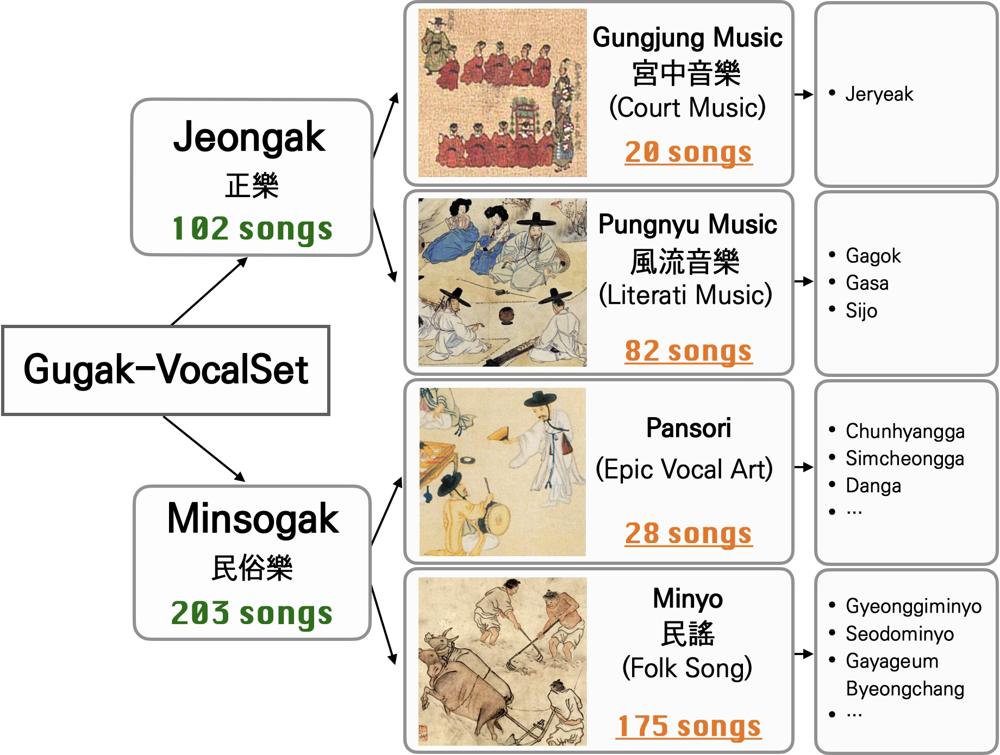
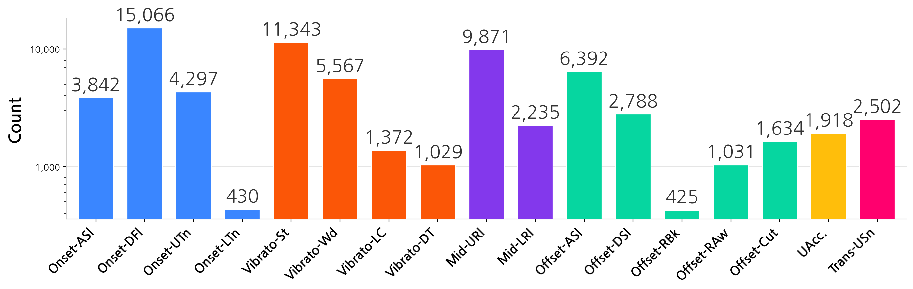
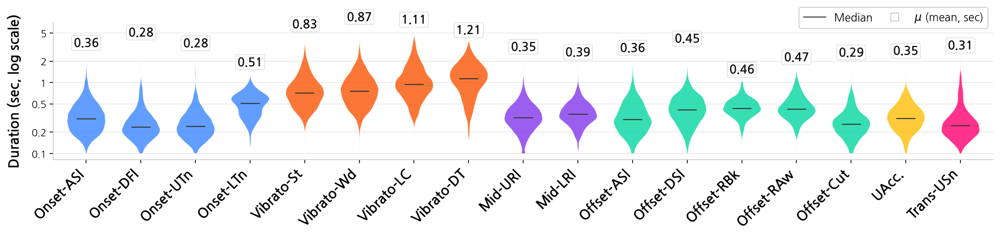
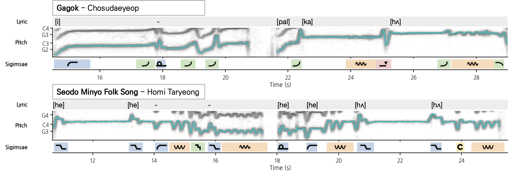

About the Dataset 데이터셋 소개
Gugak-VocalSet is the first publicly available audio dataset for Korean traditional singing with dense annotations of sigimsae 시김새 — the continuous pitch-level vocal expression that constitutes the melodic identity of Korean traditional vocal music.
It contains 24.5 hours of unaccompanied solo singing across 305 tracks of representative repertoire curated by the National Gugak Center, performed by 20 professional singers in a controlled studio environment with fixed key and tempo. Fourteen expert annotators in Korean traditional music labeled roughly 68,000 sigimsae segments (71,700 instances counting multi-label) against a unified 17-type ontology organized by functional position within the melodic line. Each track also carries phrase-level lyrics alignment, genre labels, bilingual captions, and expert mood and timbre tags.
The corpus spans two top-level genres, Jeongak 정악 and Minsogak 민속악, across four mid-level categories by musical function — court music (Gungjung), literati music (Pungnyu), Pansori, and folk song (Minyo).

Genre hierarchy of Gugak-VocalSet, with track counts at each level.
Listen 듣기
Pending release clearance, the sample recordings on this page are limited to the first 40 seconds of each track; the durations listed are those of the full recordings.
Explore Annotations 어노테이션 탐색
The timeline covers the 40-second published excerpt of the selected track.
Sigimsae Ontology 시김새 온톨로지
The 17 sigimsae types of the unified ontology, grouped by functional position within the melodic line, each with its notation symbol, schematic pitch contour, description, corpus frequency, and audio examples drawn from the dataset. Established traditional terms are retained where unambiguous — 추성 推聲, 퇴성 退聲, 전성 轉聲, 요성 搖聲 — while the remaining types are named for their contour shape and function, and the symbols visually echo those shapes.
Label statistics 레이블 통계


Paper & Benchmarks

Three layers of time-aligned annotation: phrase-level lyrics (top), F0 contour over the spectrogram (middle), and sigimsae regions color-coded by functional group (bottom).
17-category sigimsae classification (genre-stratified 80/10/10, 5-fold CV)
| Model | Input | Macro F1 | Weighted F1 |
|---|---|---|---|
| Task-specific CNNs (trained from scratch) | |||
| F0CNN | F0 contour | .441 ± .015 | .530 ± .022 |
| MelCNN | Mel spec | .400 ± .018 | .510 ± .025 |
| Frozen foundation models (best layer, MARBLE 2-layer MLP probe) | |||
| MERT-v195M (L7) | MERT emb. | .358 ± .011 | .454 ± .017 |
| CultureMERT-TA95M (L7) | MERT emb. | .334 ± .022 | .427 ± .031 |
| CultureMERT95M (L5) | MERT emb. | .316 ± .017 | .410 ± .019 |
17-category sigimsae classification (song-level, genre-stratified 80/10/10 split, mean ± std over 5-fold CV). F0CNN (Macro F1 .441) surpasses MelCNN (.400), indicating the F0 contour alone captures most of the discriminative signal. Frozen MERT-v195M peaks at .358 (L7), and its culturally-adapted variants CultureMERT-TA95M and CultureMERT95M underperform it at every probed layer. MERT-family models report the best layer among L5-L12.
Cross-genre transfer (Jeongak ↔ Minsogak)
| Direction | Within | Cross | ||
|---|---|---|---|---|
| M.F1 | Acc | M.F1 | Acc | |
| Jeongak → Minsogak | .423 ± .007 | .558 ± .005 | .279 ± .002 | .429 ± .010 |
| Minsogak → Jeongak | .354 ± .004 | .500 ± .006 | .286 ± .013 | .432 ± .035 |
F0CNN, 17-category ontology, 5-fold CV, 102 songs per genre (matched), mean ± std over 3 seeds. Cross-genre Macro F1 drops 34.0% for Jeongak→Minsogak and 19.2% for Minsogak→Jeongak relative to within-genre, well above chance and indicating a shared acoustic foundation across the two traditions.
Event detection (17-category)
| Model | Frame F1M | Ev.F1200ms | IoU F10.5 |
|---|---|---|---|
| EDTCN (f0) | .324 ± .015 | .675 ± .014 | .661 ± .014 |
| EDTCN (mel) | .269 ± .013 | .763 ± .012 | .712 ± .015 |
| MERT-v195M (L5) | .311 ± .015 | .756 ± .026 | .706 ± .028 |
| CultureMERT95M (L5) | .294 ± .016 | .747 ± .019 | .700 ± .022 |
Sigimsae event detection on the 17-category ontology: frame-level macro F1, event-level F1 (onset matching within ±200ms), and segment-level F1 (IoU ≥ 0.5). MERT-family models report the best layer among L5-L12. EDTCN(f0) attains the highest frame-level Macro F1, while EDTCN(mel) and the frozen MERT probes lead on event- and segment-level metrics, indicating pitch and spectral cues play complementary roles in event-level detection.
Download & Citation
The full dataset — 24.5 h of audio, 305 annotation JSONs, and the track-level metadata — will be released after publication. Distribution terms and the download location are still being settled with the National Gugak Center and will be announced here.
This repository currently ships a 5-track sample (40-second excerpts pending release clearance) and the complete metadata; see the repository README for schemas.
Citation
@inproceedings{gugakvocalset2026,
title = {Gugak-VocalSet: A Multi-Genre Studio-Quality Dataset of Korean Traditional Singing with Sigimsae Annotations},
author = {Han, Danbinaerin and Kim, Wonil and Hong, Seah and Moon, Dongjoo and
Lee, Jaeok and Lee, Jongpil and Kim, Chaewon and Nam, Juhan},
booktitle = {Proc. of the 27th Int. Society for Music Information Retrieval Conf. (ISMIR)},
address = {Abu Dhabi, UAE},
year = {2026}
}